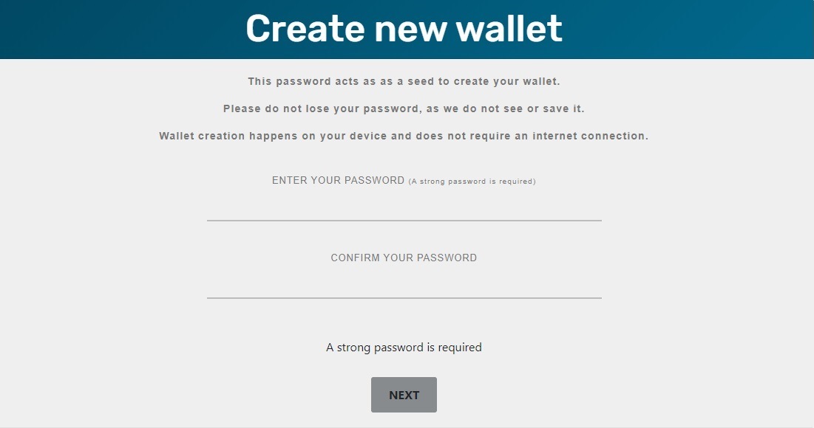
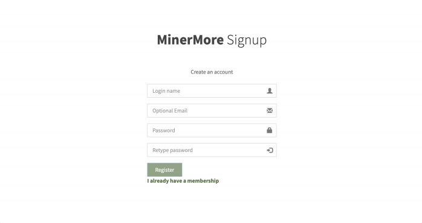
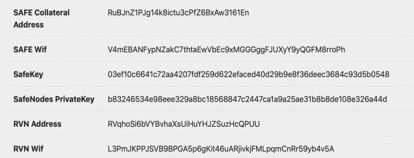
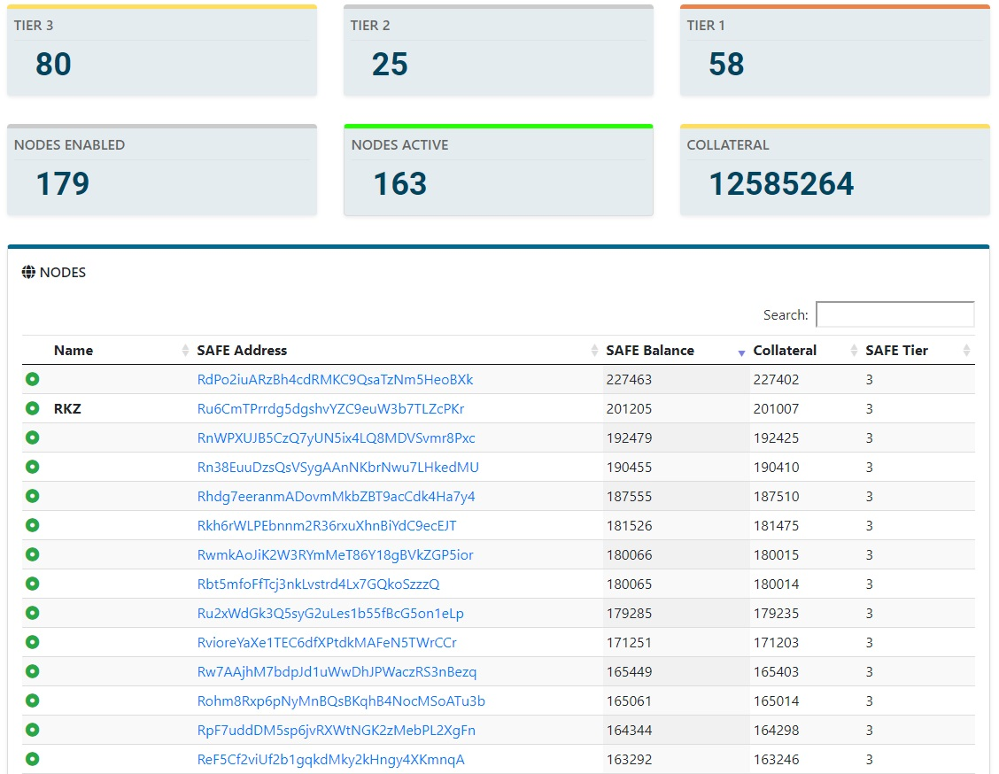

<div class="container">
    <div class="card mt-4 safe-card-v2 mb-4">
        <div class="card-header text-center">
            Raven Guide
        </div>
        <div class="card-body">
            <h3>Step 1 - Creating A SafeNode Paper Wallet </h3>

            <p>
                Please reference the guide located at : <a routerLink="/setup-safenode"><i class="fas fa-cogs"></i> Setup SafeNode</a>
            </p>

            <p style="text-align: center;">
                
            </p>

            <p>Remember to store the recovery phrase or password, Ideally in more than one place.
                Do not lose these otherwise your SafeCoins will be lost. It is not recommended to
                import your SafeNode private keys into a desktop wallet. After creating a paper wallet,
                you will need to fund the collateral address. To start receiving rewards, a minimum
                amount of 10,000 SafeCoin is needed.</p>

            <h3>Step 2 - Go To MinerMore</h3>

            <p>
                <a href="http://minermore.com" target="_blank">http://minermore.com</a>
            </p>

            <h3>Step 3 - Create An Account On MinerMore</h3>

            <p>
                <i><b>Option 1</b></i> - Login name to be the Ravencoin address in the safenodes paper wallet.
            </p>
            <p>
                <i><b>Option 2</b></i> - Any login name but you must use the Ravencoin address as withdrawal
                address in account settings
            </p>

            <p style="text-align: center;">
                
            </p>

            <p style="text-align: center;">
                
            </p>

            <p style="text-align: center;"><b>
                Creating an account on MinerMore is not essential
                though. Must use the Safenode Raven Address</b>
            </p>

            <h3>Step 4 - Set Up Your Mining Rig Configuration</h3>

            <p>
                Mine to your MinerMore account name
            </p>

            <p style="text-align: center;">
                <span style="color: #b41f23; background-color: #ffe1ef; padding: 5px; font-weight: bold;">
                    t-rex -a x16r -o stratum+tcp://us.rvn.minermore.com:4501 -u username.worker -p x
                </span>
            </p>

            <p>
                If you do not have a MinerMore account, mine to the Ravencoin address in paper
                wallet. Stratums & port in the link below.
            </p>

            <p>
                <a href="https://minermore.com/docs/help/ravencoin/" target="_blank">https://minermore.com/docs/help/ravencoin/</a>
            </p>

            <h3>Step 5 - Ravencoin rewards</h3>

            <p>
                Ravencoin rewards will be received into the MinerMore account or Ravencoin address in
                paper wallet.
            </p>

            <h3>Step 6 - SafeCoin rewards</h3>

            <p>
                A SafeCoin reward will be received when a block is found that has a Safecoin<br><br>
                Transaction in it. These rewards will be credited to your SafeNode collateral address<br><br>
                The rewards in your address can be seen here <a href="https://safenodes.org/nodes" target="_blank">https://safenodes.org/nodes</a>
            </p>

            <p style="text-align: center;">
                
            </p>

            <p style="text-align: center;">
                <a href="../../assets/Raven.pdf" target="_blank">Download this guide</a>
            </p>

            <p>
                <b>Designed for you by Team Safe</b>
            </p>

        </div>
    </div>
</div>

